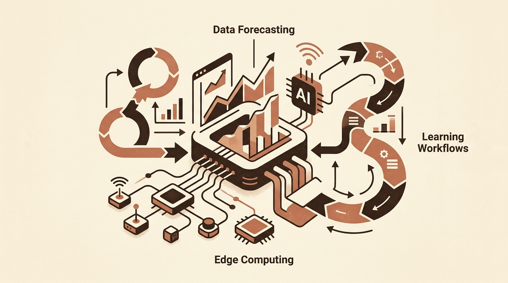
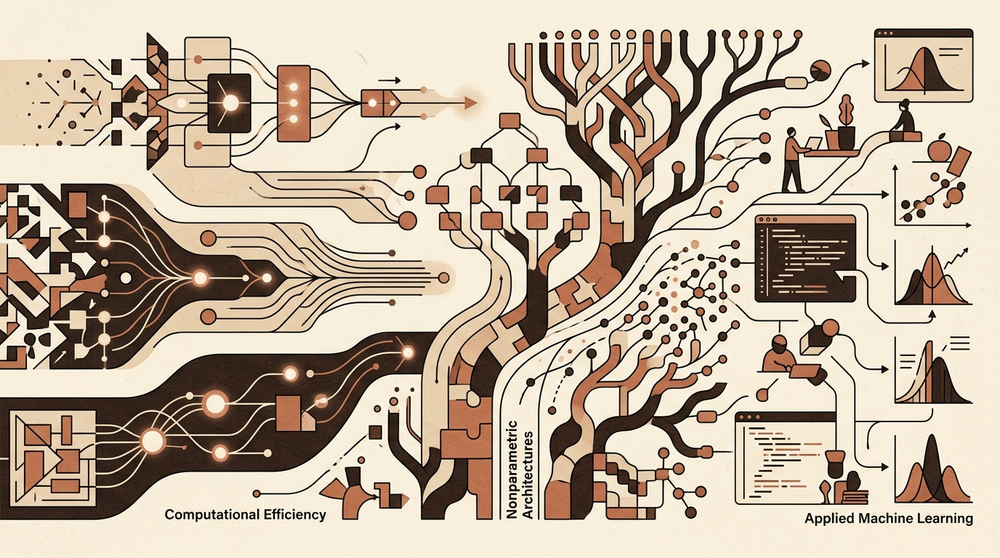

Daily digest
-

Towards Data Science
Evaluating AI Capabilities in Edge Computing, Forecasting, and Learning Workflows
Recent technical discussions reflect a growing focus on evaluating AI's practical performance across edge computing, data analysis, and software engineering workflows. Rather than treating artificial intelligence as a…
-
KDnuggets
Navigating AI Infrastructure Costs and Python SDK Engineering
The rapid expansion of artificial intelligence infrastructure presents both financial and governance challenges. While public discussions frequently focus on whether new data centers should be constructed, the…
-

Hugging Face Blog
Adapting Large Language Models to Regional Dialects and Nuance
Standard large language models often struggle to capture regional dialects, localized idioms, and specific cultural contexts, as their training corpora are predominantly composed of standard forms of major global…
-

arXiv cs.LG
Advances in Computational Efficiency, Nonparametric Architectures, and Applied Machine Learning
This selection of recent research highlights a strong focus on runtime efficiency and computational optimization across diverse machine learning paradigms. Studies such as AdaEva, TreeWalker, and COVER address…